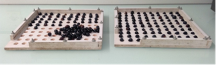

Suivi maturité par prélèvement de baies
Fiche en cours de validation. Pour toute remarque ou question, contactez-nous.
Objectif
Le suivi de maturité permet de mesurer les paramètres de composition des baies et d’apprécier la qualité de la vendange. Le suivi de maturité aide à déterminer la date optimale de récolte.
Principe de la mesure
Le suivi maturité repose sur des prélèvements de baies, de portion de grappes ou de grappes entières. Cet échantillon est ensuite foulé pour extraire le jus de raisin qui sera analysé au laboratoire.
Le prélèvement de 200 baies est jugé le plus fiable. Il permet en outre d’obtenir le poids moyen d’une baie, une des composantes du rendement agronomique. La taille des baies a aussi un impact sur le rendement en jus en cave (les petites baies donnent moins de jus) et sur la qualité (rapport pellicule / jus) pour les raisins rouges. C’est donc cette méthode de prélèvement qui est recommandée pour un suivi expérimental.
Sur le terrain
Échantillonnage
La qualité des données dépend grandement de la qualité de l’échantillonnage et de sa répétabilité :
- Prélever toujours sur les mêmes ceps ou rangs
- Former les préleveurs
- Tenir compte d’un éventuel effet préleveur (équilibrer l’échantillonnage par exemple)
Nombre d’observations
Prélever au moins 200 baies pour une parcelle, sur au moins 50 grappes. Pour les placettes de moins de 30 ceps, il est possible de ne prélever que 100 baies.
Choix des ceps à observer
- Eviter les rangs de bordure et les débuts et fin de rangs (laisser au moins 2 ceps)
- Ne pas prélever les ceps malades ou les remplaçants
Choix des grappes et des baies
- Alterner les faces de rangs
- Choisir les grappes au hasard, à différents niveaux sur le rameau (en évitant les grappillons)
- Prélever les baies au hasard en alternant haut, bas, devant, derrière et côtés des grappes. Les baies peuvent être prélevées 2 par 2.
Mesure
Réalisation
Après le prélèvement, les analyses en laboratoire doivent être réalisées dans un délai de 24h maximum.
Ne pas écraser les baies. Les conserver au frais, dans une glacière en évitant le contact direct avec la glace.
Outils
- sachet ou boite de prélèvement
- papier essuie-tout
- glacière
Période de mesure
- Pour un suivi de maturation, le rythme de prélèvement doit être régulier. Commencer dès la fin de la véraison (ou la semaine suivante). Au début un prélèvement par semaine suffit, mais il peut être nécessaire de passer à deux par semaine à l’approche des vendanges.
- Pour un point à la récolte, le prélèvement sera réalisé la veille ou le jour même de la vendange.
Aspects pratiques
Stocker les baies dans des boites congélation, tapissées de papier absorbant si la vendange est mouillée. Il est aussi possible de la sécher au sèche-cheveux.
Stocker les échantillons dans un endroit frais (10 à 15°C), mais pas au frigo : une température trop fraîche peut entraîner des précipitations tartriques au sein des raisins et fausser les analyses d’acidité.
Utiliser un damier après récolte permet de s’assurer du nombre de baies prélevées.

Traitement des résultats
Définition des variables
Variables agronomiques
La pesée des 200 baies permet d’estimer le poids moyen unitaire1 d’une baie (SBER_W_g), exprimé en grammes.
Variables analytiques
Les paramètres mesurés en laboratoire peuvent être assez nombreux. Les méthodes d’analyses peuvent varier, ainsi que les unités utilisées. Il est donc nécessaire de documenter soigneusement les analyses réalisées (méthode, unité) et d’être vigilant dans le choix des correspondances avec la Vitis Ontology.
Le tableau ci-dessous reprend les principaux paramètres classiquement analysé.
| Paramètre | Vitis Ontology | Méthode | OIV [1] | Unité |
|---|---|---|---|---|
| Teneur en sucres23 | BERRY_SUG_g | Réfractomètre | OIV-MA-AS2-02 (Type I) | g.L-1 |
| Teneur en glucose et fructose | GLUFRU | Dosage enzymatique | OIV-MA-AS311-02 (Type II) | mg.L-1 |
| Teneur en glucose et fructose | HPLC | OIV-MA-AS311-03 (Type II) | mg.L-1 | |
| pH | BERRY_pH | pHmètre | OIV-MA-AS313-15 (Type I) | pH |
| Acidité totale | BER_TA_man_g | Titration manuelle | OIV-MA-AS313-01 (Type I) | g H2SO4 .L-1 |
| Acide tartrique | BER_TART_HPLC_g | HPLC | OIV-MA-AS313-04 (Type IV) | g.L-1 |
| Acide tartrique | Electrophorèse | OIV-MA-AS313-19 (Type II) | ||
| Acide malique | BER_MAL_g | Dosage enzymatique | OIV-MA-AS313-11 (Type II) | g.L-1 |
| Acide malique | BER_MAL_HPLC | HPLC | OIV-MA-AS313-04 (Type IV) | g.L-1 |
| Acide malique | Electrophorèse | OIV-MA-AS313-19 (Type II) | g.L-1 | |
| Azote assimilable | BERRY_N_NH4&AA | Somme des teneurs en azote ammoniacal et aminé | mg.L-1 | |
| Azote ammoniacal | BERRY_N_NH4 | Dosage enzymatique | mg.L-1 | |
| Azote alpha-aminé | BERRY_N_AA | Dosage colorimétrique | mg.L-1 | |
| Composés phénolique (DO280) | BERRY_DO280 | Spectrophotométrie | sans unité | |
| Teneur en K | BERRY_K | Spectrométrie de flamme | OIV-MA-AS322-02A (Type II) | mg.L-1 |
| 𝛅C13 | Spectrométrie de masse | sans unité |
La plupart des laboratoires propose aussi en routine des dosages par spectroscopie infrarouge à transformée de Fourier (IRTF), méthode rapide et peu coûteuse.
Consulter le référentiel de variable disponible sur le centre de ressources Viti-Oeno pour vérifier si un équivalent existe dans la Vitis Ontology. Attention au différence de méthode et d’unité !
Interprétation des résultats
Les paramètres analytiques permettent d’appréhender les différents types de maturité.
| Type de maturité | Définition | Paramètres |
|---|---|---|
| Maturité physiologique | C’est le stade où les baies ont atteint leur taille maximale et où les pépins sont complètement formés, prêts à germer. | Mesure de la taille et du poids des baies. Couleur et dureté des pépins. |
| Maturité technologique | À ce stade, les raisins ont atteint un équilibre entre leur teneur en sucre et leur acidité. | Teneurs en sucres, acidité totale, pH. Le rapport Sucres/Acidité totale est un indicateur de la maturité technologique |
| Maturité phénolique | Cette maturité concerne principalement les composés phénoliques, tels que les tanins et les anthocyanes, qui sont importants pour la couleur, le goût et la structure des vins rouges. | Teneurs en anthocyanes, tannins. Indice polyphénolique total. |
| Maturité aromatique | À ce stade, les raisins ont développé leurs arômes variétaux caractéristiques. | Teneurs en composés aromatiques |
Chaque cépage, chaque parcelle a ses caractéristiques propres qui influent sur un ou plusieurs aspects de ces maturités [2]. L’état sanitaire, la conduite de la vigne et le climat sont autant d’éléments qui peuvent également induire des changements dans les dynamiques de maturation.
Compléments d’information
Ressources complémentaires
Fiches sur le prélèvement des raisins :
Références
Notes de bas de page
Ne pas oublier de diviser le poids total de l’échantillon par le nombre de baies prélevées !↩︎
Toujours conserver/préférer la teneur en sucres dans le jeu de données. C’est en effet le paramètre de base mesuré et cela évite les incertitudes sur le facteur de conversion.↩︎
Voir table de correspondance avec les degrés brix (TSS).↩︎